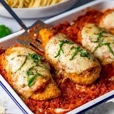

Chicken Parmesan

Description
A crispier take on chicken parmesan while using less sauce.
Ingredients
- 4 skinless, boneless chicken breast halves
- salt and freshly ground black pepper to taste
- 2 large eggs
- 1 cup panko bread crumbs, or more as needed
- 3/4 cup grated parmesan cheese, divided
- 2 tsbp all-purpose flour, or more if needed
- 1/2 cup olive oil for frying, or as needed
- 1/2 cup prepared tomato sauce
- 1/4 cup fresh mozzarella, cut into small cubes
- 1/4 cup chopped fresh basil
- 1/2 cup grated provolone cheese
- 2 teaspoons olive oil
Steps
- Preheat an oven to 450°F.
- Place chicken breasts between two sheets of heavy plastic (resealable freezer bags work well) on a solid, level surface. Firmly pound the chicken with the smooth side of a meat mallet to a thickenss of 1/2 inch.
- Season chicken thoroughly with salt and pepper. Using a sifter or strainer, sprinkle flour over chicken breasts, evenly coating both sides.
- Beat eggs in a shallow bowl and set aside.
- Mix bread crumbs and 1/2 cup parmesan cheese in a separate bowl, set aside.
- Dip a flour-coated chicken breast in beaten eggs. Transfer breast to the bread crumb mixture, pressing crumbs into both sides. Repeat for each breast. Let chicken rest for 10-15 minutes.
- Heat 1/2 inch olive oil in a large skillet on medium-high heat until it begins to simmer. Cook chicken in the hot oil until golden, about 2 minutes per side. The chicken will finish cooking in the oven.
- Transfer chicken to a baking dish. Top each breast with 2 tbsp of tomato sauce. Layer each chicken breast with equal amounts of mozzarella cheese, fresh basil, and provolone cheese. Sprinkle remaining parmesan over top and drizzle each with 1/2 tsp olive oil.
- Bake in the preheated oven until cheese is browned and bubbly and chicken breasts are no longer pink in the center (15-20 minutes). An instant-read thermometer inserted into the center should read at least 165°F.
- The dish is now ready to serve!